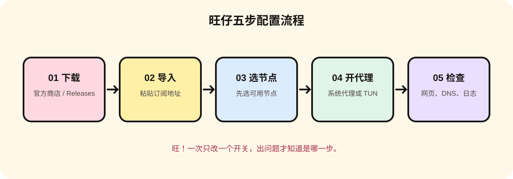

30 秒直接答案
小火箭 Shadowrocket 的官方入口是 Apple App Store 页面；Clash Party 的官方入口是 GitHub Releases。Windows、macOS 使用 Clash Party；iPhone/iPad 使用 Shadowrocket。下载后再导入你已核实的订阅地址。
1. 官方下载入口
- Shadowrocket / 小火箭：App Store 官方页面。核对 App Store ID 932747118 和开发者信息，不安装陌生描述文件或企业签名包。
- Clash Party：项目官方 Releases。Windows 选择 x64 或 ARM64，macOS 选择 Intel 或 Apple 芯片对应文件。
- 核心文档：Mihomo 官方 Wiki，用于查模式、DNS、TUN 等术语。
下载边界：官方入口只负责软件，不等于提供节点或订阅。所谓“破解版、免费永久节点、免注册安装包”都要先停下来核对来源。
2. 三台设备都适用的五步流程

- 下载并安装官方版本，记录系统版本和 CPU 架构。
- 打开客户端的订阅/Profiles/配置页面，粘贴订阅地址并更新。
- 选择一个节点，先观察延迟或连接日志，不要把绿色图标当成稳定证明。
- 按设备开启系统代理；只有明确需要接管非代理应用时，再考虑 TUN。
- 打开一个普通网页和一个 DNS 检查页，记录时间、节点、错误文本。
3. Windows：Clash Party
- 从 Releases 下载 Windows x64 或 ARM64 文件，解压到固定目录后启动。
- 进入 Profiles/配置，选择“添加订阅”或粘贴订阅 URL，保存后点击更新。
- 在 Proxies/代理页选择节点；在 General/常规页先打开 System Proxy/系统代理。
- 只有系统代理无法覆盖目标应用时，再按需打开 TUN；Windows 可能需要管理员权限。
- 网页打不开时先关闭其他 VPN、虚拟网卡和浏览器安全 DNS，查看客户端日志。
预期结果：系统代理开关状态明确，客户端日志能看到请求；关闭客户端后，系统代理应恢复为关闭。
4. iOS：Shadowrocket 小火箭
- 通过 App Store 官方页面安装，首次打开时不要导入来路不明的配置文件。
- 点右上角添加，选择 Subscribe/订阅，粘贴订阅 URL，保存并更新。
- 在首页选择一个节点，点击连接；系统弹窗出现 VPN 配置权限时，确认应用来源无误后再允许。
- 模式先选 Rule/规则；只有排查规则问题时，短时间切换 Global/全局做对照。
- 测试完成后回到系统 VPN 设置确认连接状态，不使用时断开以减少后台活动。
预期结果：订阅能更新、节点可选择、系统 VPN 显示连接；任一环节失败都先记下错误文字。
5. macOS：Clash Party
- 从 Releases 下载 Intel 或 Apple Silicon 版本，首次启动按系统提示完成网络权限设置。
- 在 Profiles 导入订阅并更新，确认配置文件时间发生变化。
- 打开系统代理进行浏览器测试；需要接管更多应用时，再单独测试 TUN。
- 如果出现“无法打开开发者”提示，先核对下载来源和签名，不要盲目关闭 Gatekeeper。
- 在日志页记录 DNS、连接和规则命中情况，关闭客户端后检查系统代理是否恢复。
6. 常见故障：按环节排查
- 订阅更新失败：检查 URL 是否完整、网络是否可用、返回状态码和证书错误；不要把订阅粘贴到陌生转换网站。
- 节点列表为空：确认激活的配置和 Provider 已更新，查看 YAML 解析或 HTTP 错误。
- 客户端显示连接但网页打不开：先切换规则/全局做对照，再检查 DNS；一次只改一个变量。
- 开启 TUN 后断网：退出其他 VPN 与虚拟网卡，关闭 TUN 恢复系统代理，确认权限和 DNS 后再试。
旺仔提醒：图片是原创流程示意，不是服务商后台截图；套餐、节点和连接效果必须以你自己的服务页面与实际记录为准。
资料来源
本文为资料整理与配置说明，不提供节点、套餐或速度承诺。